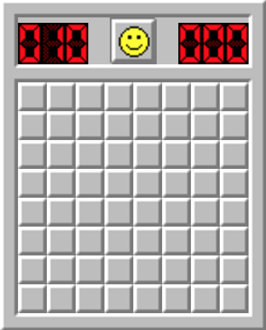

Ayuda
Buscaminas (en inglés: Minesweeper), es un videojuego para un jugador inventado en 1989. El juego ha sido programado para muchos sistemas operativos, pero debe su popularidad a las versiones que vienen con Microsoft Windows desde su versión 3.1.
Reglas
- El juego consiste en despejar todas las casillas de una pantalla que no oculten una mina.
- Algunas casillas tienen un número, este número indica las minas que suman todas las casillas circundantes. Así, si una casilla tiene el número 3, significa que de las ocho casillas que hay alrededor (si no es en una esquina o borde) hay 3 con minas y 5 sin minas. Si se descubre una casilla sin número indica que ninguna de las casillas vecinas tiene mina y estas se descubren automáticamente.
- Si se descubre una casilla con una mina se pierde la partida.
- Se puede poner una marca en las casillas que el jugador piensa que hay minas para ayudar a descubrir la que están cerca.